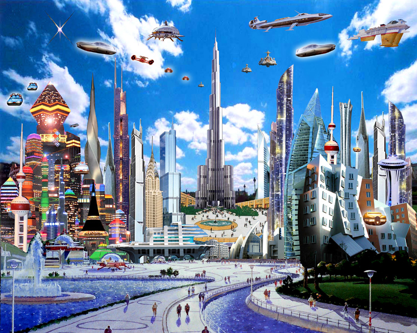

Purpose
The purpose of this experiment is to use jquery to generate a carousel slider for images that keeps changing after a specified time.
Experiment
Watch the carousel changing the image. Initially I have added four images . One can do as many as he wants. One can achieve this by creating a list tag of images and then using jquery animate to slide images after a fixed interval.
- 